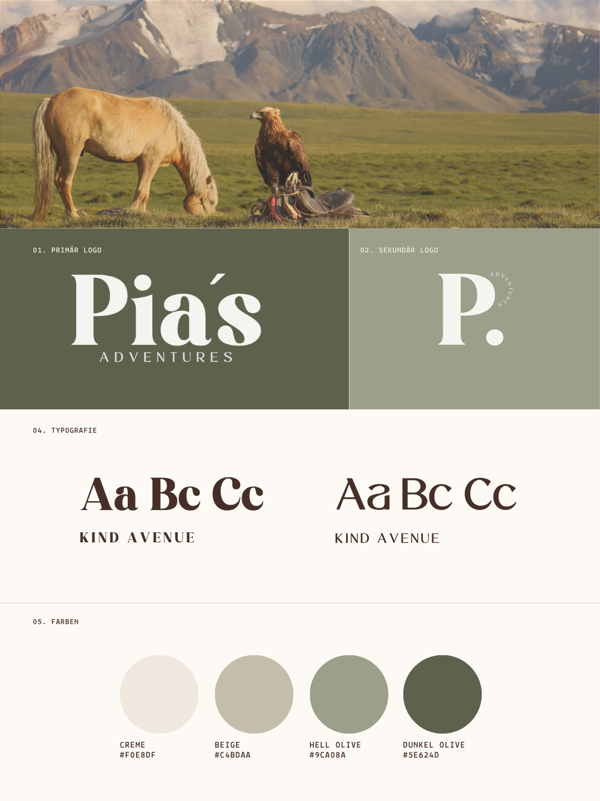

Pia's Adventures
Im Rahmen meiner Bachelorarbeit beschäftigte ich mich mit der Analyse manipulativer
Interface-Elemente (Dark Patterns) und deren Einfluss auf das Nutzerverhalten in digitalen
Kaufprozessen. Dabei untersuchte ich, wie bestimmte Gestaltungsmuster Entscheidungen beeinflussen
können und welche Auswirkungen sie auf die User Experience haben. Der Fokus lag dabei nicht auf der
Entwicklung eines möglichst ansprechenden UI-Designs, sondern auf der Untersuchung, wie
Interface-Gestaltung Wahrnehmung, Entscheidungsverhalten und das Nutzungserlebnis beeinflusst.
Dafür analysierte ich zunächst bestehende Dark-Pattern-Kategorien sowie psychologische Grundlagen
digitaler Entscheidungsprozesse. Aufbauend darauf entwickelte ich zwei interaktive
Onlineshop-Prototypen: eine manipulativ gestaltete Variante mit ausgewählten Dark Patterns und eine
identische transparente Variante ohne Dark Patterns. Anschließend wurden beide Varianten im Rahmen einer Nutzerstudie verglichen. Dabei analysierte ich
Nutzerinteraktionen, Entscheidungsverhalten und die wahrgenommene User Experience mithilfe von
Fragebögen, Feedback der Nutzer und Beobachtungen während des Kaufprozesses. Insgesamt zeigten die Ergebnisse,
dass Dark Patterns Entscheidungen beeinflussen können und sich negativ auf zentrale Aspekte
der User Experience wie Vertrauen, wahrgenommene Kontrolle und Zufriedenheit auswirken.

Visual Branding
Brand Identity Kit

Responsive Version noch nicht vorhanden
Ursprüngliche Startseite der Website

Mit personalisierbaren Blog-Covern
Ursprüngliche Blog-Ansicht der Website

Neues Layout, Logo und Farbkonzept
Neue Startseite inkl. neuem Branding

Neu hinzugefügt, für mehr Persönlichkeit
Persönlicher About-Abschnitt

Zwischenabschnitt für einen schöneren Übergang zur Blog-Ansicht
Statisches Bild und Blog-Teaser

Angepasstes Layout an die restliche Website
Blog-Ansicht